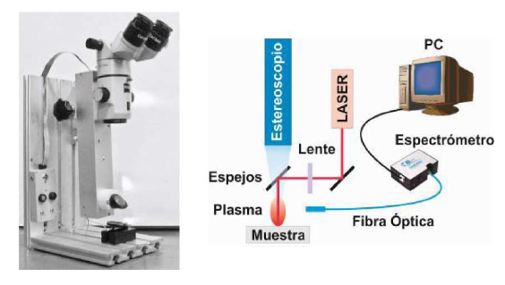
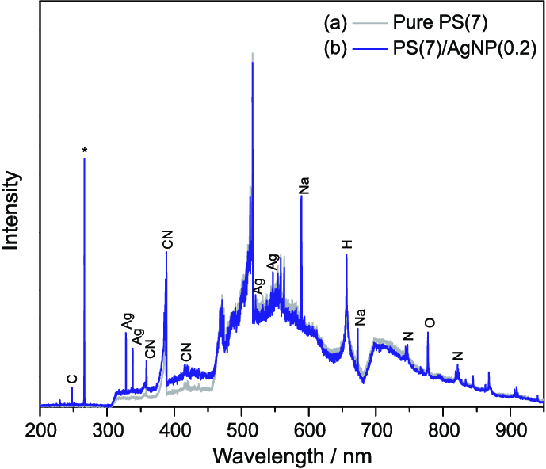
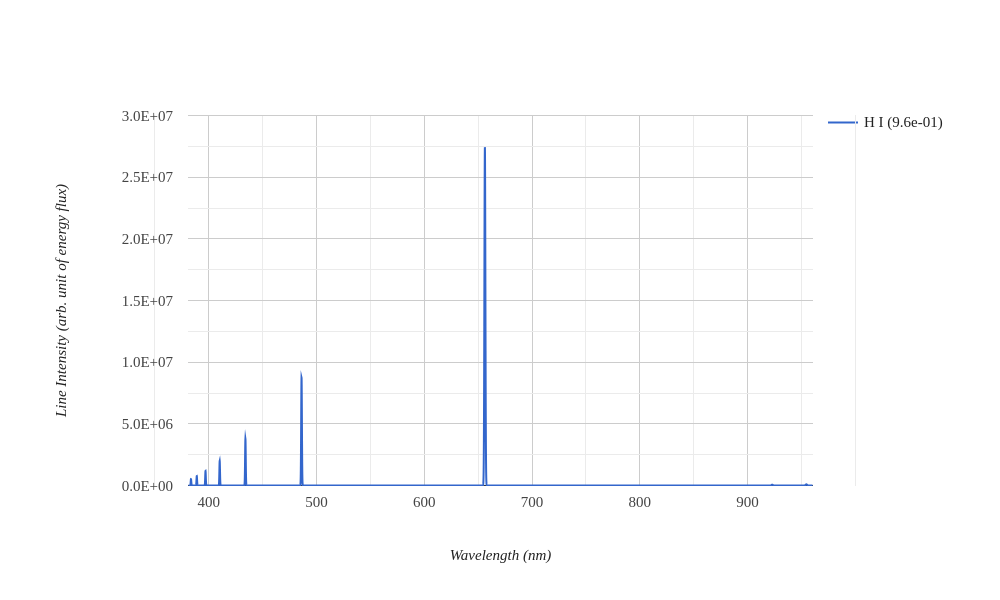
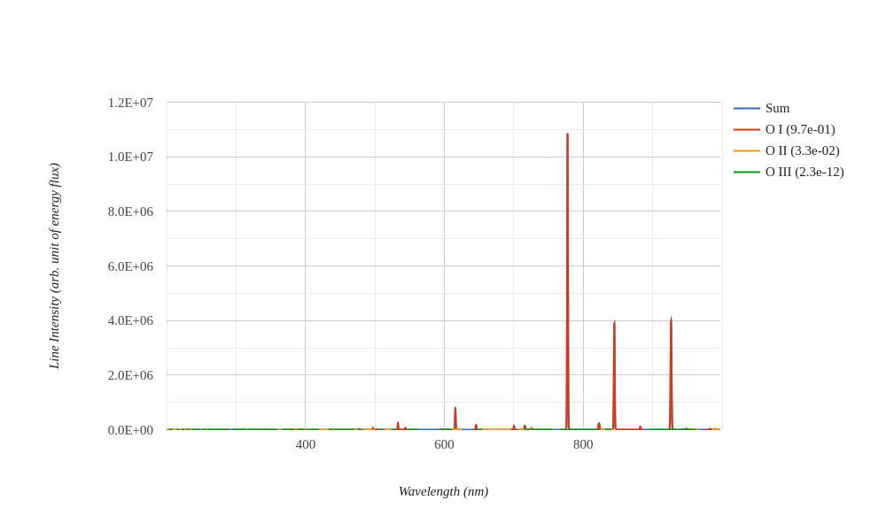
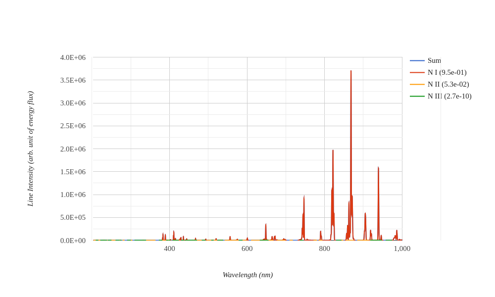
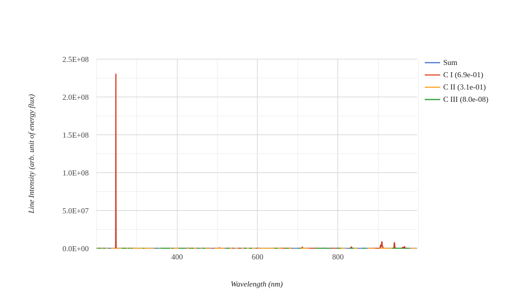
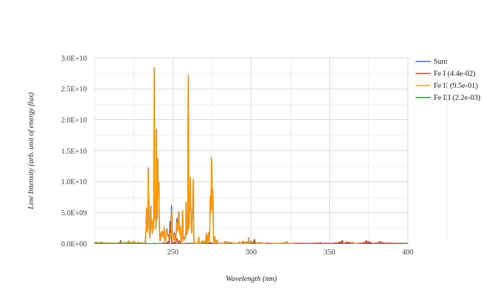

¿Qué es la espectroscopia de emisión óptica mediante LIBS?
espectroscopia de emisión óptica
La espectroscopia de emisión óptica (OES, por sus siglas en inglés) es una técnica analítica utilizada para determinar la composición elemental de una muestra analizando la luz emitida por sus átomos o iones cuando se encuentran en un estado excitado. Esta técnica se basa en el principio de que cada elemento químico emite luz (radiación electromagnética) a longitudes de onda características cuando es excitado a altas energías, permitiendo su identificación y cuantificación.
Cuando los átomos o iones de una muestra se excitan (por ejemplo mediante un láser como se hace en la técnica LIBS), los electrones se mueven a niveles de energía más altos. Al regresar a niveles de energía más bajos, liberan energía en forma de luz. La longitud de onda (color) de esta luz es específica para cada elemento, actuando como una “huella digital” única que permite identificar los elementos presentes en la muestra. La intensidad de la luz emitida en estas longitudes de onda específicas se relaciona con la concentración del elemento en la muestra.

Espectro óptico
Un espectro óptico es una representación visual de la distribución de la luz con respecto a su longitud de onda o frecuencia. Habitualmente se representa el rango de luz visible e inmediatamente adyacente (ultravioleta cercano e infrarrojo cercano) que puede ser observado o medido cuando la luz se descompone por su longitud de onda.
Un espectro óptico se representa sobre unos ejes cartesianos, donde el eje \(x\) representa la longitud de onda y el eje \(y\) la de intensidad de luz.
El espectro óptico se puede dividir en tres regiones principales: ultravioleta (UV), visible (VIS) e infrarrojo (IR). La luz ultravioleta tiene longitudes de onda más cortas que la luz visible, mientras que la luz infrarroja tiene longitudes de onda más largas. La luz visible se encuentra en el rango de longitudes de onda de 400 a 700 nm.

Espectros de los elementos químicos
La base de datos de los espectros de emisión mediante LIBS de los elementos químicos es muy extensa y se puede consultar en NIST Atomic Spectra Database.
A continuación se muestran algunos ejemplos de espectros de emisión de algunos elementos químicos.
Hidrógeno

Oxígeno

Nitrógeno

Carbono

Hierro
